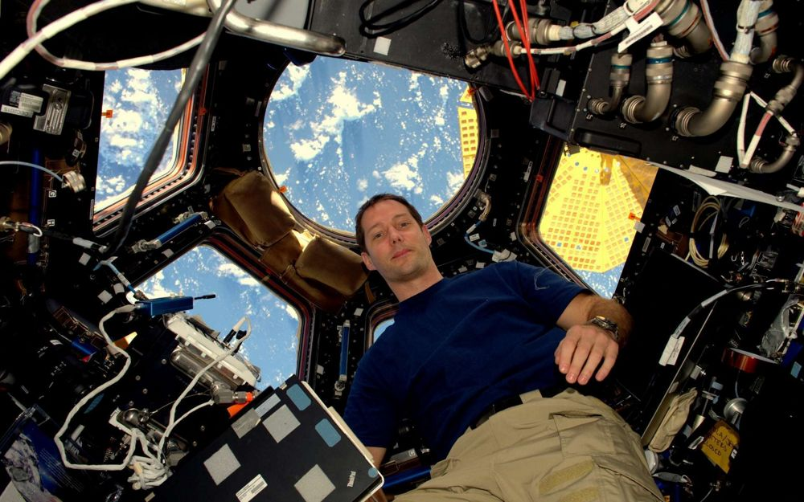

Thomas Pesquet, né le 27 février 1978 à Rouen,
est un spationaute français. Après une formation
d'ingénieur aéronautique, Thomas Pesquet a occupé
différents postes dans l'industrie aérospatiale et
au Centre National d'Études Spatiales (CNES) avant
de devenir, en 2005, pilote de ligne. En 2009, il
fait partie des six candidats retenus pour former
le troisième groupe d'astronautes européens
sélectionnés par l'Agence spatiale européenne (ESA).
Thomas Pesquet est le dixième Français à partir dans
l'espace en décollant le 17 novembre 2016 à bord de
Soyouz MS-03 dont l’équipage occupe la Station
spatiale internationale de novembre 2016 à juin 2017.
Durant cette mission, Thomas Pesquet a mené une
centaine d'expériences dont la moitié développée par
l'Agence spatiale européenne ou le CNES, l'autre
moitié par la NASA. Il effectue deux sorties
extravéhiculaires de six heures pour des missions de
maintenance de la Station spatiale internationale.
Durant son séjour dans la station spatiale, Pesquet
est ingénieur de vol. Comme les autres membres de
l'équipage, son temps est partagé entre la réalisation
d'expériences scientifiques et la maintenance de la
station spatiale. Dans le cadre de sa mission, il doit
mener plus d'une centaine d'expériences scientifiques
pour moitié conçues sous l'égide de la NASA, l'autre
moitié sous celle de l'Agence spatiale européenne.